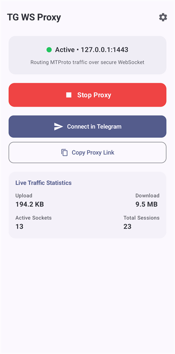

Локальный прокси для вашего смартфона. Ускоряет загрузку видео, голосовых сообщений и каналов в Telegram в один клик.

Нажмите синюю кнопку «Скачать APK» в начале страницы. Файл загрузится в память вашего смартфона.
Откройте скачанный файл в шторке уведомлений или через папку «Загрузки» и нажмите «Установить».
Откройте установленное приложение TG WS Proxy и нажмите переключатель «Запустить прокси».
Нажмите большую кнопку «Подключить в Telegram». У вас автоматически откроется Telegram с окном добавления прокси — нажмите «Включить».
В правом верхнем углу Telegram появится значок щита со статусом «Подключено». Видео и кружочки будут открываться быстро.
Скачать приложениеВаши переписки, фотографии и звонки зашифрованы ключами Telegram. Прокси работает как труба и физически не может прочитать ваши данные.
Приложение не требует регистрации, авторизации или ввода личных данных. Никаких аккаунтов.
Написано нативно на Kotlin. В фоновом режиме потребляет минимум энергии и оперативной памяти.
Код полностью открыт для проверки любым независимым разработчиком на GitHub.
Нет, приложение полностью бесплатное, без подписок, ограничений по скорости и рекламы.
Нет, TG WS Proxy работает автономно прямо на вашем смартфоне.
Нет, приложение работает на любых смартфонах с Android 8.0 и выше без необходимости рутирования.
Зайдите в «Настройки» телефона → «Приложения» → «TG WS Proxy» → «Батарея» и установите режим «Без ограничений» (Не оптимизировать).